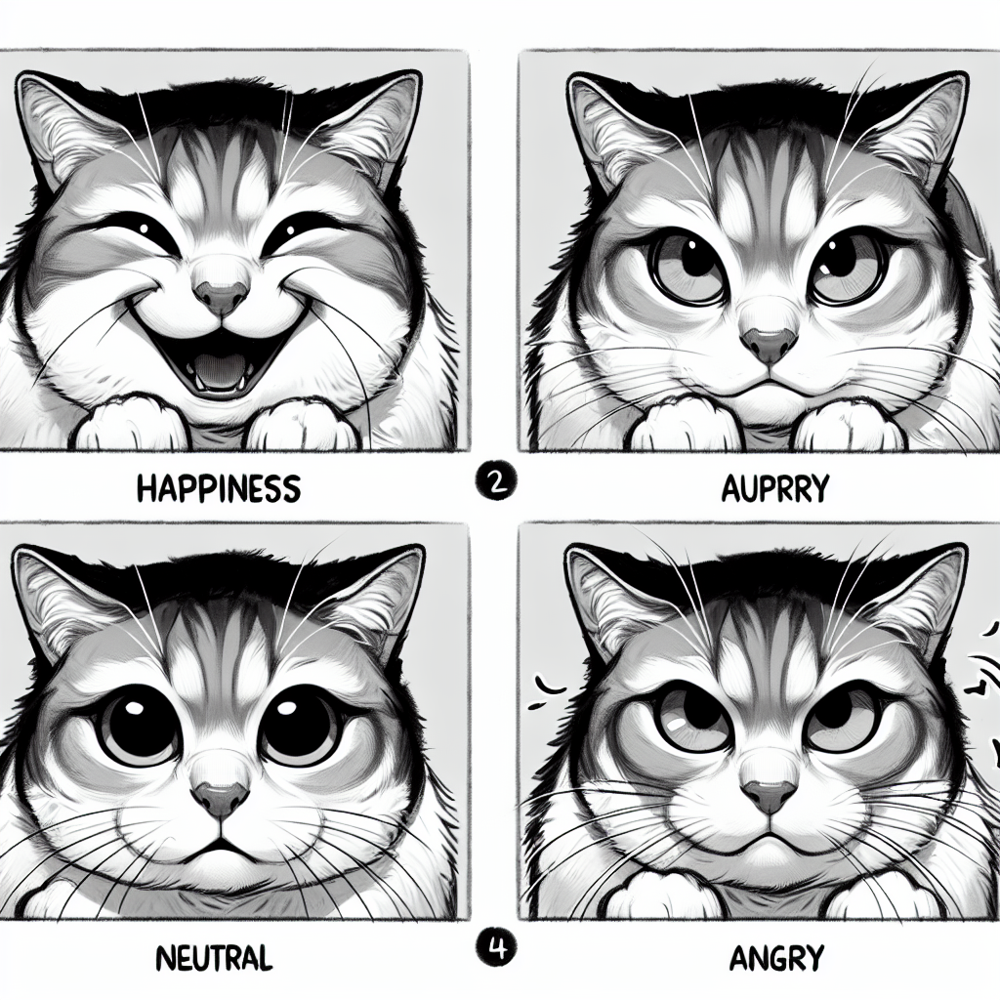

Introduction to Cat Ownership
This lecture provides a comprehensive overview of what it takes to be a responsible cat owner, covering everything from basic care needs to understanding cat behavior.
Understanding Your Cat
|  | Cats are independent creatures with unique personalities.Understanding cat behavior is key to a happy coexistence.Cats communicate through body language and vocalizations.It's important to respect their space and boundaries. |
Basic Care Needs
 | Proper nutrition is crucial for a cat's health.Regular veterinary check-ups are necessary.Cats need mental and physical stimulation.Grooming requirements vary among different breeds. |
Creating a Cat-Friendly Home
| Provide a safe and stimulating environment.Ensure access to clean water and a nutritious diet.Litter box placement and cleanliness are important.Scratching posts and toys can prevent furniture damage. |
Health and Wellness
| Recognizing signs of illness or distress is vital.Preventative care can save lives and reduce vet bills.Dental health is an often overlooked aspect of cat care.Regular exercise helps prevent obesity and related issues. |
Behavior and Training
| Positive reinforcement is the most effective training method.Understanding natural behaviors helps in addressing issues.Patience and consistency are key in training.Socialization from a young age can prevent fear and aggression. |